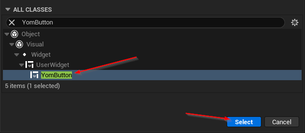
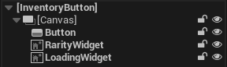
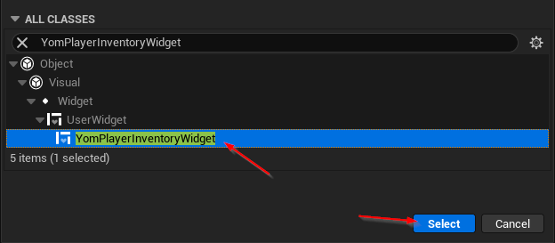
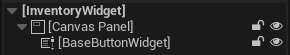
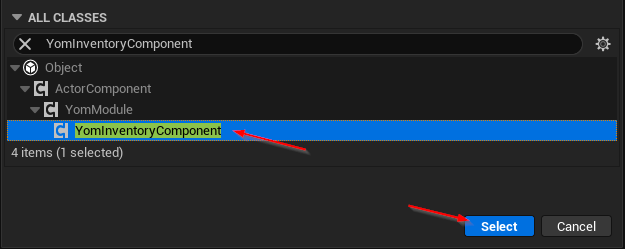

Setting up an inventory
The Your Open Metaverse plugin allows creators to completely design their own inventory system. This guide will explain how to create your own inventory system and how to use your own inventory system in your metaspace.
Step 1: Creating your own buttons
The inventory system consists of buttons that can be pressed to spawn items. A single button needs to be designed for the system to work. To create a button you will have to create a new blueprint asset. Right-click in a folder in the Content Browser and under Create Basic Asset click on Blueprint Class.

This will open up the blueprint dialog box in which you can search for YomButton. Once you find the YomButton select it.

Name the button something like MyButton and open up the blueprint by double-clicking the new asset. In the blueprint editor, you will now have an empty screen, in which you will have to design your button. But before you start the button will need some widgets:
Canvas(Overlay)- The canvas in which the button can be built
Button(Button)- The button that can be clicked
RarityWidget(Any Widget)- The rarity widget, can be seen as the border around the button
LoadingWidget(Any Widget)- The widget that is shown when the item is being loaded
All of these widgets also need to have the name of the items described above. In the default YomButton the hierarchy looks like this:

Tips
- Set the visibility of the RarityWidget to
Not Hit-Testable (Self & All Children)by clicking on the RarityWidget in the hierarchy and going toDetails -> Behavior -> Visibility. This prevents the Rarity widget from 'overlapping' the button which would prevent a user from pressing the button. - Design your button with a fixed size this will prevent the buttons from 'stretching' when loaded
Step 2: Creating your own Inventory Widget
Create another blueprint like in step 1, but this should have YomPlayerInventoryWidget selected.

Give this a name as well like MyPlayerInventoryWidget and open up the blueprint by double clicking the new asset. This will again give you an empty screen. On this screen, you can design your layout of the inventory. It will need one widget:
- BaseButtonWidget (A widget with slots for other widgets like the
Scroll Box)- In this widget, your buttons will be created
The hierarchy of the default InventoryWidget looks like this:

Furthermore, your MyPlayerInventoryWidget needs to have some settings applied to it before it works. Click on MyPlayerInventoryWidget in the hierarchy and go to Details -> Yom Inventory. Here you will see the following settings:
Yom Button Widget- The widget for your button, set this to the button you created in step 1.
Base Button Widget- This one should be set to the
BaseButtonWidgetin the hierarchy, but if it is not set, you can set it here
- This one should be set to the
Start Button Amount- This value tells the inventory system how many buttons it should spawn when the player is connected. If the player has more items than this amount more buttons will be loaded.
Tips
- Keep in mind that players could have more items in their inventory than you expect. Your inventory should not deform when a lot of items are being loaded.
Step 3: Creating a component
Create another blueprint like in step 1, but this should have YomInventoryComponent selected.

Give this a name as well like MyInventory and open up the blueprint by double clicking the new asset. In the asset, you will have to set one setting. Go to Details -> Yom Inventory Component -> Inventory Widget and set it to the widget you created in Step 2
Step 4: Setting your inventory in your player
Open your MetaspacePlayer and under components remove YomDefaultInventory if present. Then add the component that you created in step 3. When you start the game now you can see your own inventory in action when pressing 'I' while playing.